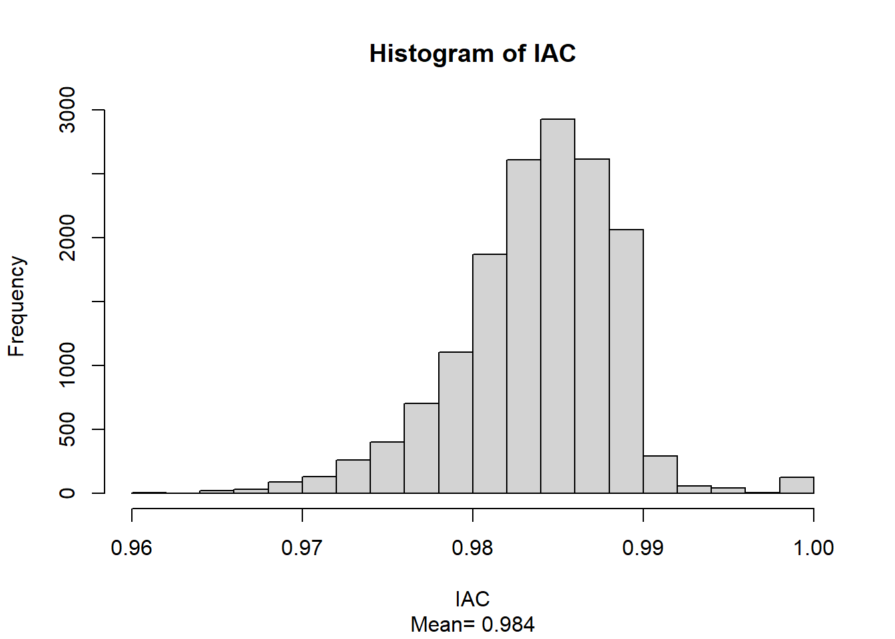
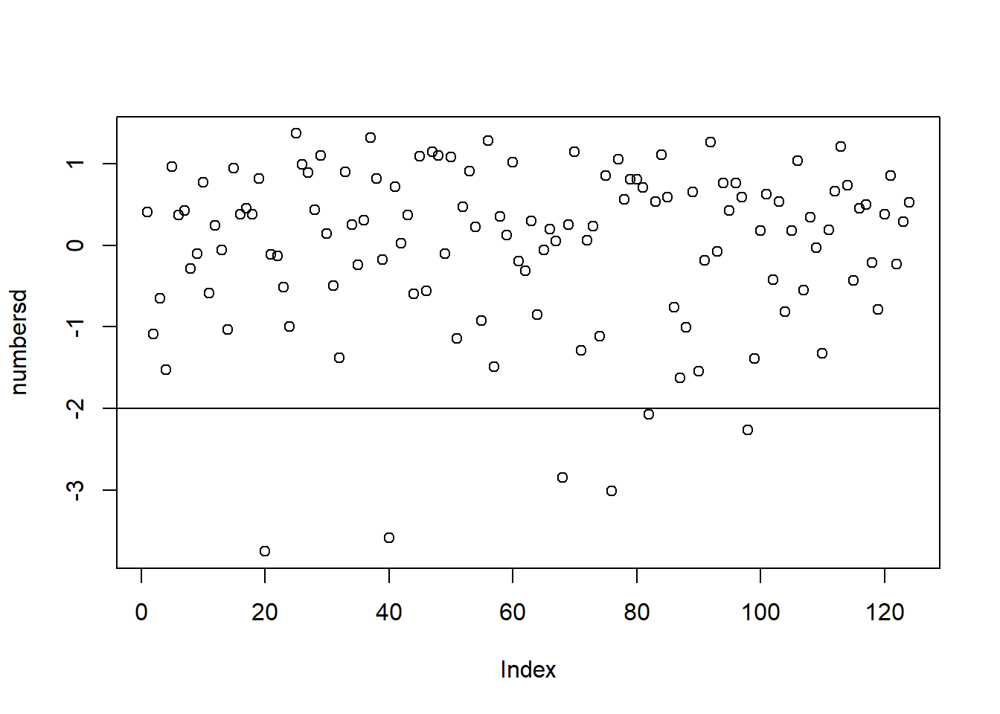
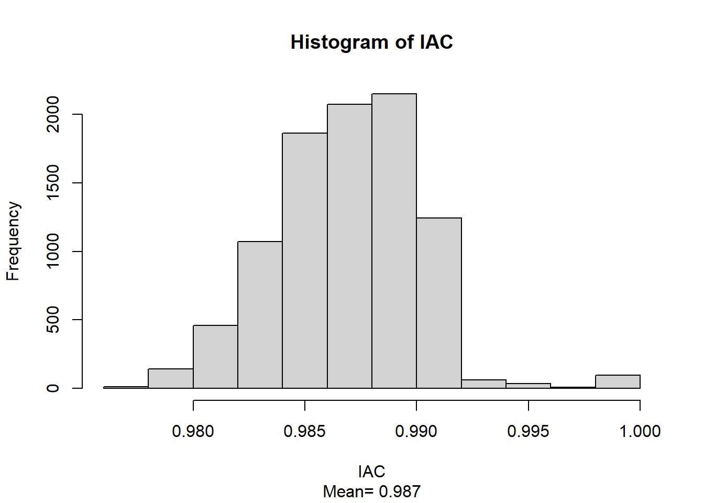
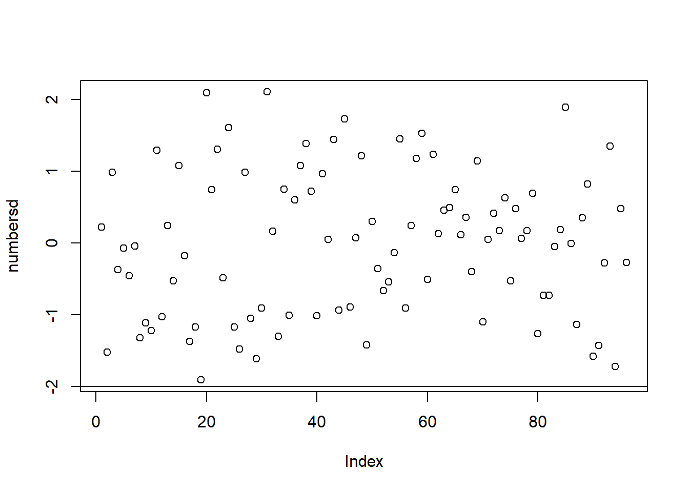
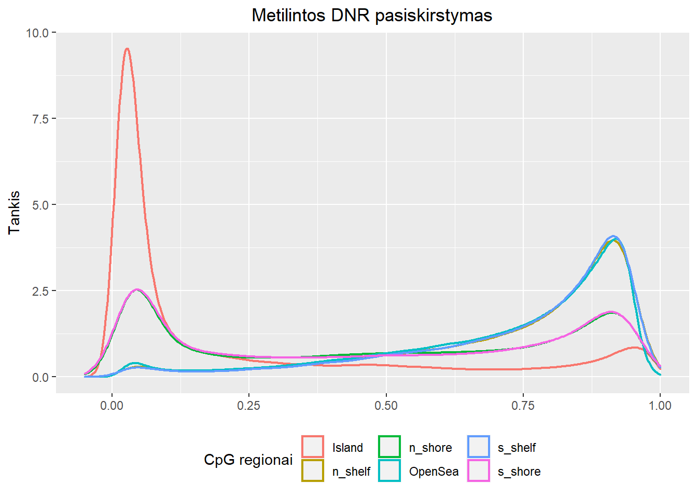

1. Pasiruoškite sau paskirtus sample-key failus (apvalydami reikšmes).
Pateiktoje sample-key lentelėje nebuvo aptikta anotacijos, gramatikos klaidų. Stulpelių pavadinimai buvo pateikti mažosiomis raidėmis, todėl jie nebuvo koreguojami. Taip pat buvo tikrinami skaitinės informacijos rėžiai, tačiau visa informacija buvo pateikta korektiškai ir teisingai, todėl papildomos modifikacijos nebuvo atliekamos.
2. Nuskaitykite parsisiųstus idat failus į “RGChannelSet” tipo objektą.
Idat failų nuskaitymui buvo sėkmingai panaudota read.metharray.exp() funkcija iš R minfi bibliotekos, kuri buvo įkelta prieš atliekant duomenų valymą (R programos Preparations bloke).
rgSet <- read.metharray.exp(base = "IDATS")3. Gaukite “detection p-value” kiekvienam DNR modifikacijos įverčiui.
Detection p-value matrica kiekvienam DNR modifikacijos įverčiui gauta, naudojant detectionP() funkciją iš minfi bibliotekos.
Patikrinus, ar yra p-verčių didesnių už 0.01, tokių verčių nebuvo aptikta.
Iš RGChannelSet objekto išmeskite visus mėginius (stulpelius), kurie turi daugiau nei 1% “blogų” detection p reikšmių.
rgSet <- rgSet[, keep]
data <- data[keep,]
detP <- detP[, keep]
NROW(rgSet)## [1] 10518154. Normalizuokite savo duomenis, naudojant preprocessSWAN(), preprocessFunnorm() arba preproccessIllumina() funkcijas iš minfi bibliotekos.
Duomenims normalizuoti buvo pasirinkta preprocessFunnorm() funkcija, nes ji buvo naudota straipsnyje aprašyto tyrimo metu. Atliekant Biomedicininės duomenų analizės užduotis yra siekiama kuo tiksliau atkartoti šiame straipsnyje aprašyto tyrimo metu atliktą statistinę gautų duomenų analizę.
mSetSq <- preprocessFunnorm(rgSet)
mSetRaw <- preprocessRaw(rgSet)5. Išmeskite visas genomines pozicijas (eilutes), kurios turi daugiau nei 1% “blogų” detection p reikšmių.
# ensure probes are in the same order in the mSetSq and detP objects:
detP <- detP[match(featureNames(mSetSq), rownames(detP)), ]
# remove any probes that have failed in one or more samples:
keep <- rowSums(detP < 0.01) == ncol(mSetSq)
NROW(mSetSq)
table(keep)
## keep
## FALSE TRUE
## 9713 856146
mSetSq <- mSetSq[keep, ]
NROW(mSetSq)6. Išmeskite genomines pozicijas (eilutes), neturinčias “CG” nukleotidų poros (CH) arba esančias šalia DNR polimorfizmų.
Genominės pozicijos, neturinčios “CG” nukleotidų poros, buvo pašalintos, pasinaudojus dropMethylationLoci() funkcija.
Prieš panaudojant dropMethylationLoci() funkciją duomenų matrica turėjo 865859 eilutes. Atlikus genominių pozicijų, neturinčių “CG” nukleotidų poros, filtravimą, buvo paliktos 862927 matricos eilutės - 2932 eilutės buvo pašalintos.
7. Pašalinkite mėginius, kurių nurodyta lytis skiriasi nuo spėjamos lyties. Straipsnyje aprašyto tyrimo metu buvo tiriamos tik moterys. Pasinaudojus getSex() funkcija, spėjančią žmogaus lytį, kita lytis nebuvo gauta - visiems žmonėms, kurių mėginiai buvo analizuojami, buvo nuspėta moteriška (female (F)) lytis.
estSex <- getSex(mSetSq, cutoff = -2)
estSex$predictedSex == 'F'## [1] TRUE TRUE TRUE TRUE TRUE TRUE TRUE TRUE TRUE TRUE TRUE TRUE TRUE TRUE TRUE
## [16] TRUE TRUE TRUE TRUE TRUE TRUE TRUE TRUE TRUE TRUE TRUE TRUE TRUE TRUE TRUE
## [31] TRUE TRUE TRUE TRUE TRUE TRUE TRUE TRUE TRUE TRUE TRUE TRUE TRUE TRUE TRUE
## [46] TRUE TRUE TRUE TRUE TRUE TRUE TRUE TRUE TRUE TRUE TRUE TRUE TRUE TRUE TRUE
## [61] TRUE TRUE TRUE TRUE TRUE TRUE TRUE TRUE TRUE TRUE TRUE TRUE TRUE TRUE TRUE
## [76] TRUE TRUE TRUE TRUE TRUE TRUE TRUE TRUE TRUE TRUE TRUE TRUE TRUE TRUE TRUE
## [91] TRUE TRUE TRUE TRUE TRUE TRUE TRUE TRUE TRUE TRUE TRUE TRUE TRUE TRUE TRUE
## [106] TRUE TRUE TRUE TRUE TRUE TRUE TRUE TRUE TRUE TRUE TRUE TRUE TRUE TRUE TRUE
## [121] TRUE TRUE TRUE TRUE8. Po duomenų paruošimo iš gauto objekto pasidarykite 3 atskirus objektus: pagrindinės modifikacijos įverčių matricos (getBeta()), informacijos apie pagrindinės matricos mėginius (stulpelius) (pData()) ir informacijos apie pagrindinės matricos pozicijas (eilutes) (getAnnotation()).
beta <- getBeta(mSetSq)
pData <- pData(mSetSq)
annotation <- getAnnotation(mSetSq)
save(beta, file = "beta.Rdata")
save(pData, file = "pData.Rdata")
save(annotation, file = "annotation.Rdata")9. Atlikite IAC išskirčių pašalinimą.
Išskirtys pašalintos, remiantis šiame dokumente pateiktu procedūros aprašymu.
# # load("beta.Rdata")
dat <- beta
IAC <- cor(dat, use = "p")
hist(IAC, sub = paste("Mean=", format(mean(IAC[upper.tri(IAC)]), digits = 3)))
Sukurtoje histogramoje galima matyti, kad prieš atliekant išskirčių šalinimą, vidutinė IAC vertė yra lygi 0.984. Taip pat histogramoje matomos dvi “uodegos”, esančios kairėje ir dešinėje reikšmių pasiskirstymo pusėse. Tai rodo, jog tarp turimų duomenų gali būti išskirčių.
meanIAC <- apply(IAC, 2, mean)
sdCorr <- sd(meanIAC)
numbersd <- (meanIAC - mean(meanIAC)) / sdCorr
plot(numbersd)
abline(h = -2)
Tokią pačią išvadą apie išskirtis galima padaryti ir išanalizavus pateiktą sklaidos grafiką (scatter plot). Grafike galima pastebėti, jog esama 6 mėginių, esančių žemiau -2 reikšmės ribos. Pasinaudojus R komandomis buvo nustatyti šių mėginių vardai:
sdout = -2
outliers = dimnames(dat)[[2]][numbersd < sdout]
outliers## [1] "GSM4223839_202135260006_R04C01" "GSM4223859_202135260109_R08C01"
## [3] "GSM4223887_202135260065_R03C01" "GSM4223895_202081130066_R02C01"
## [5] "GSM4223901_202081130066_R08C01" "GSM4223917_202128330197_R08C01"Nustatyti mėginiai buvo pašalinti. Atlikus mėginių šalinimą toliau buvo tikrinama, ar duomenų rinkinyje liko išskirčių. Tas pats procesas buvo kartojamas tol, kol programa pateikdavo mėginių pavadinimus, kuriuose yra išskirčių.
Atlikus 7 iteracijas programa nebepateikė mėginių, kuriuose yra išskirčių, pavadinimų bei sklaidos grafike nebeliko taškų, esančių žemiau -2 reikšmės ribos:
IAC <- cor(dat8, use = "p")
hist(IAC, sub = paste("Mean=", format(mean(IAC[upper.tri(IAC)]), digits = 3)))
meanIAC <- apply(IAC, 2, mean)
sdCorr <- sd(meanIAC)
numbersd <- (meanIAC - mean(meanIAC)) / sdCorr
plot(numbersd)
abline(h = -2)
Atlikus 7 iteracijas buvo pašalinti 28 mėginiai. Duomenų rinkinyje liko 96 mėginiai, neturintys išskirčių.
10. Atlikite bent vieną kokybės kontrolės žingsnį.
# rm(list = ls(all.names = TRUE))
# # Įkeliami pData ir annotation objektai:
# load("pData.Rdata")
# load("annotation.Rdata")
# Nuskaitomas beta duomenų rinkinys su pašalintomis išskirtimis:
beta_clean <- readRDS("dat8.Rds")
pDatf <- as.data.frame(pData)
annotf <- as.data.frame(annotation)
beta_cleandf <- as.data.frame(beta_clean)
clean_pDat <- pDatf[(rownames(pDatf) %in% c(colnames(beta_clean))), ]
save(clean_pDat, file = "clean_pDat.Rdata")
openSea <- annotf[annotf$Relation_to_Island == "OpenSea", ]
b_openSea <- rowMeans(beta_cleandf[rownames(openSea), ])
island <- annotf[annotf$Relation_to_Island == "Island", ]
b_island <- rowMeans(beta_cleandf[rownames(island), ])
n_shore <- annotf[annotf$Relation_to_Island == "N_Shore", ]
b_n_shore <- rowMeans(beta_cleandf[rownames(n_shore), ])
s_shore <- annotf[annotf$Relation_to_Island == "S_Shore", ]
b_s_shore <- rowMeans(beta_cleandf[rownames(s_shore), ])
n_shelf <- annotf[annotf$Relation_to_Island == "N_Shelf", ]
b_n_shelf <- rowMeans(beta_cleandf[rownames(n_shelf), ])
s_shelf <- annotf[annotf$Relation_to_Island == "S_Shelf", ]
b_s_shelf <- rowMeans(beta_cleandf[rownames(s_shelf), ])
betas_by_group <- c(b_island, b_openSea, b_n_shore,
b_s_shore,b_n_shelf, b_s_shelf)
cpg_regions <- c(rep("Island", length(b_island)),
rep("OpenSea", length(b_openSea)),
rep("s_shore", length(b_s_shore)),
rep("n_shore", length(b_n_shore)),
rep("n_shelf", length(b_n_shelf)),
rep("s_shelf", length(b_s_shelf)))
df <- data.frame(betas_by_group, cpg_regions)
saveRDS(betas_by_group, file = "betas_by_group.Rds")
saveRDS(cpg_regions, file = "cpg_regions.Rds")
saveRDS(df, "df.Rds")qc_plot <- ggplot(df, aes(x = betas_by_group, colour = cpg_regions)) +
labs(title = "Metilintos DNR pasiskirstymas",
x = NULL, y = "Tankis") +
geom_density(lwd = 0.8, linetype = 1) +
xlim(-0.05, 1) +
theme(plot.title = element_text(hjust = 0.5)) +
scale_colour_discrete(name = "CpG regionai")
qc_plot + theme(legend.position = "bottom")
11. Užsikrauname išsaugotus paruoštus duomenis.
# load("beta.Rdata")
# load("pData.Rdata")
# load("annotation.Rdata")